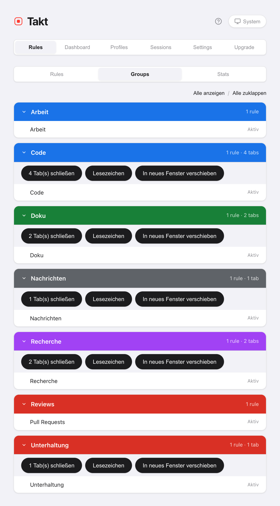

Kurz gesagt: Takt bündelt alle Massenaktionen für Tabs in einem Popup und hinter drei Standard-Tastaturkürzeln. Alt+Shift+G gruppiert, Alt+Shift+U hebt Gruppen auf, Alt+Shift+C klappt ein.
- Free: Gruppieren, Gruppen aufheben, Einklappen, Ausklappen, Duplikate schließen, Nach Domain sortieren (aktuelles Fenster), der Bereich Tabs.
- Premium: eine ganze Gruppe schließen, als Lesezeichen speichern oder verschieben, alle Fenster sortieren, andere Fenster einklappen, eine Sammelgruppe „Andere“ für übrige Tabs.
- Alles läuft auf Ihrem Computer. Kein Konto.
Was tut jede Aufräum-Schaltfläche?
Der Bereich Startseite im Popup hat einen Block Schnellaktionen. Gruppieren, Gruppen aufheben, Einklappen, Ausklappen und Duplikate schließen werden grau, wenn sie nichts bewirken würden. So zeigt der Block auch den Zustand Ihrer Tabs.

| Schaltfläche | Was sie tut | Wirkungsbereich | Plan |
|---|---|---|---|
| Tabs gruppieren | Ordnet Tabs nach Ihren Regeln, nach Kategorie oder per KI in Gruppen ein | Alle Fenster | Free |
| Alle aufheben | Entfernt alle Gruppen, behält alle Tabs | Alle Fenster | Free |
| Alle einklappen | Klappt jede Gruppe auf ihr Label ein | Alle Fenster | Free |
| Alle ausklappen | Öffnet jede Gruppe | Aktuelles Fenster | Free |
| Duplikate schließen | Schließt wiederholte URLs, behält die erste Kopie | Aktuelles Fenster | Free |
| Nach Domain sortieren | Stellt Tabs derselben Website nebeneinander | Aktuelles Fenster (Free), alle Fenster (Premium) | Free / Premium |
Tabs gruppieren folgt dem darüber gewählten Gruppierungsmodus. Im Kategorie- und KI-Modus legt der kostenlose Plan pro Durchlauf bis zu 5 Gruppen an. Mehr dazu unter Gruppieren mit Regeln und Gruppieren nach Kategorie oder per KI.
Wie räume ich ein chaotisches Fenster mit vier Klicks auf?
- Duplikate schließen. Wiederholte Tabs in diesem Fenster werden geschlossen. Die Kopie ganz links bleibt. Wenn Sie damit anfangen, gruppieren Sie nie die Kopien.
- Tabs gruppieren. Jeder passende Tab landet in seiner Gruppe.
- Nach Domain sortieren. Innerhalb jeder Gruppe und unter den ungruppierten Tabs reihen sich Tabs derselben Website aneinander. Beim Sortieren wird nie ein Tab in eine Gruppe hinein- oder aus ihr herausbewegt.
- Alle einklappen. Jede Gruppe klappt auf ihr farbiges Label zusammen.
Duplikate schließen behandelt zwei URLs gemäß Ihrer Einstellung für den URL-Abgleich als gleich. Standardmäßig werden das #fragment, ein führendes www., ein abschließender Schrägstrich und die Reihenfolge der Query-Parameter ignoriert.
Welche Tastaturkürzel gibt es?
| Tastaturkürzel | Aktion | Plan |
|---|---|---|
| Alt+Shift+G | Alle Tabs gruppieren | Free |
| Alt+Shift+U | Gruppen aller Tabs aufheben | Free |
| Alt+Shift+C | Alle Gruppen einklappen | Free |
| Alt+Shift+Space | Quick Switch: jeden Tab suchen und direkt hinspringen | Premium |
| Standardmäßig keins | Alle Gruppen ausklappen | Free |
Chrome erlaubt einer Erweiterung höchstens vier vorgeschlagene Tastaturkürzel, deshalb hat Alle ausklappen keins. Weisen Sie unter chrome://extensions/shortcuts eine Taste zu. Dort können Sie auch die anderen vier ändern.
Wie sehe ich alle offenen Tabs in einer Liste?
Öffnen Sie im Popup den Bereich Tabs. Er listet die Tabs aller Fenster unter ihren Gruppennamen auf, von A bis Z, ungruppierte Tabs zuletzt. Tippen Sie, um nach Titel oder URL zu filtern. Klicken Sie auf einen Tab, um zu ihm zu springen. Dieser Bereich ist kostenlos.
Kann ich eine ganze Gruppe schließen, als Lesezeichen speichern oder verschieben?
Ja, mit Premium. Drei Aktionen wirken auf eine Gruppe als Ganzes:
- Schließen. Schließt die Tabs der Gruppe. Angeheftete Tabs bleiben offen. Die Ansicht Groups fragt vorher nach einer Bestätigung.
- Lesezeichen. Speichert die Gruppe in einem Ordner „Takt Bookmarks“. Die Tabs bleiben offen. Erfordert die optionale Berechtigung Lesezeichen-Zugriff.
- In neues Fenster verschieben. Behält Name, Farbe und Einklappzustand der Gruppe.
Sie finden sie unter Optionen → Rules → Groups oder per Rechtsklick auf eine Seite unter Gruppenaktionen. Über das Rechtsklickmenü können Sie die Gruppe außerdem in ein anderes bereits geöffnetes Fenster verschieben.

Können sich Gruppen von selbst einklappen?
Auf drei Arten, alle ausgeschaltet, bis Sie sie aktivieren:
- Pro Regel. Haken Sie im Regel-Editor Auto-collapse group an. Eine neue Gruppe aus dieser Regel startet eingeklappt, es sei denn, sie enthält den Tab, den Sie gerade ansehen. Free.
- Im selben Fenster. Settings → Tab Groups → Auto-collapse other groups on expand. Öffnen Sie eine Gruppe, und die anderen in diesem Fenster klappen ein. Free.
- Über Fenster hinweg. Auto-collapse groups in other windows when switching focus. Wechseln Sie das Fenster, und nach 300 ms klappen die Gruppen in allen anderen Fenstern ein. Premium.

Was passiert mit Tabs, auf die keine Regel passt?
Sie bleiben ungruppiert. Mit Premium aktivieren Sie die Sammelgruppe, und Tabs gruppieren sammelt jeden übrigen Tab in einer grauen Gruppe „Andere“. Angeheftete Tabs und chrome://-Seiten bleiben unberührt. Ein erneutes Tabs gruppieren verwendet dieselbe Gruppe „Andere“ wieder. Das gilt im Regelmodus.
Was diese Schaltflächen nicht tun
- Nach Domain sortieren ist einmalig. Neue Tabs werden nicht laufend sortiert. Außerdem vergleicht die Funktion die letzten beiden Teile eines Hostnamens, sodass
example.co.ukalsco.uksortiert wird. - Duplikate schließen bleibt in einem Fenster. Eine Kopie in einem anderen Fenster wird nicht angerührt.
- Gruppenaktionen sitzen im Seitenmenü. Klicken Sie mit der rechten Maustaste auf die Seite, nicht auf die Tab-Leiste.
- Tabs gruppieren braucht ein Kriterium. Im Regelmodus bleiben Tabs, auf die keine Regel passt, lose, außer die Sammelgruppe ist aktiv.
Zwei Klicks von losen Tabs zu einer ordentlichen Reihe Gruppen.
Zu Chrome hinzufügen — kostenlosHäufige Fragen
Welche Tastaturkürzel hat Takt standardmäßig?
Alt+Shift+G gruppiert, Alt+Shift+U hebt Gruppen auf, Alt+Shift+C klappt ein, und Alt+Shift+Space öffnet Quick Switch (Premium). Alle ausklappen hat kein Standardkürzel. Weisen Sie eines unter chrome://extensions/shortcuts zu.
Welchen Tab behält Duplikate schließen?
Die erste Kopie in der Reihenfolge der Tab-Leiste, von links gezählt. Spätere Kopien im aktuellen Fenster werden geschlossen. Ihre Einstellung für den URL-Abgleich entscheidet, was als gleiche URL gilt; standardmäßig wird das #fragment ignoriert.
Sind die Aufräum-Schaltflächen kostenlos?
Gruppieren, Gruppen aufheben, Einklappen, Ausklappen, Duplikate schließen, der Bereich Tabs und das automatische Einklappen im selben Fenster sind kostenlos. Nach Domain sortieren ist für das aktuelle Fenster kostenlos. Premium ($3/Monat oder $30/Jahr) ergänzt das Sortieren aller Fenster, Gruppenaktionen, automatisches Einklappen über Fenster hinweg und die Gruppe „Andere“.
Kann ich eine ganze Tab-Gruppe auf einmal schließen?
Mit Premium ja: über die Ansicht Groups in den Takt-Optionen oder über Gruppenaktionen im Rechtsklickmenü der Seite. Beim Schließen bleiben angeheftete Tabs offen, und die Ansicht Groups fragt vorher nach einer Bestätigung.